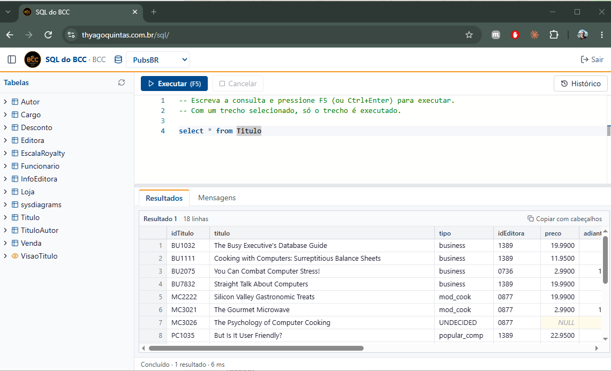

SQL do BCC
O SQL do BCC é um site que permite aos alunos exercitarem comandos de SQL sem a necessidade de instalar nenhum client no computador. Funciona direto no navegador — inclusive em Mac, e até pelo celular.

O código de acesso é o nome da instância do nosso SQL Server no Senac.